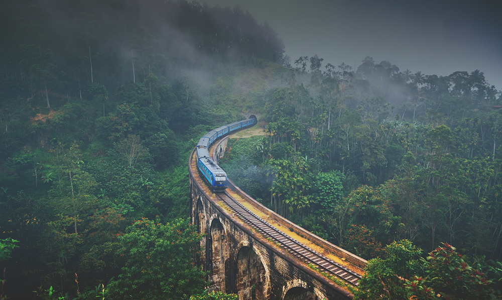

The Nine Arches Bridge
The Nine Arches Bridge also known as The Bridge In the Sky is one of the best examples of colonial-era railway construction in the country. It is located in Demodara, between Ella and Demodara railway stations.